Funktioner
Allt Trax kan göra, sorterat efter när du använder det.
När du lägger spåret
Spårläggaren registrerar rutten och föremålen.
- Spårets ålderNedräkning på låsskärmen, och en avisering fem minuter innan spåret är klart.
- Meter mellan föremålSe hur långt det är sedan förra föremålet medan du lägger spåret.
- StörspårLägg ett färskare spår på tvären, med en avisering före korsningen.
- IGP-nivå och mallVälj nivå från IGP-V till FH 3, se steg mot kravet och lägg spåret efter en mall på kartan.
- ViltspårSårbädd, blodavbrott, vilt och flyktriktning, med egna knappar under läggningen.
- Spårplaner iPhoneRita spåret på kartan hemma och lägg det efter planen ute.
- Håll in StoppSpåret avslutas inte av misstag.
När hunden spårar
Hundföraren följer hunden med telefonen i fickan.
- RöstaviseringarHör när du närmar dig ett föremål.
- SpårtappTelefonen vibrerar när ni kommer bort från spåret.
- Fynd automatisktFöremålet registreras som hittat när du kommer fram till det.
- Okänt spårSpåret och aviseringarna döljs tills du stoppar.
- MarkeringLigg, sitt, stå, apport eller förbi, med ett tryck efter ”Hittat”.
- NattlägeRött ljus på skärmen, med spåret och positionen väl synliga.
- Föremålssök och ytsökGör en ruta på kartan och sök efter föremål eller figuranter, med tidsgräns och egen statistik.
Efteråt
Se vad som hände och hur hunden utvecklas.
- SpårdetaljenStor karta med uppspelning och flikar för översikt, avvikelse, föremål och förhållanden.
- HundsidanNyckeltal, mål, träningsmoment och utvecklingen för varje hund.
- Bedömning av spåretGe betyg, svårighetsgrad och en lärdom efter varje spår.
- TräningsmomentSkapa egna moment som ”Spetsig vinkel” och bedöm dem efter spåret.
- Vind och väderVindpil på kartan och vädret när hunden startar spåret.
- Redigera spårKlipp början och slutet av ett spår i efterhand, och rätta fynd efteråt.
Delning och dina data
Inget konto. Spåren ligger på din telefon.
- Skicka spåret till hundförarenSkicka spåret med AirDrop eller e-post, så öppnas det direkt i Trax hos mottagaren.
- Skicka spår okäntMottagaren ser bara startplatsen tills spåret är upptaget.
- Dela med en bild av hundenTrax lägger spåret, föremålen och siffrorna ovanpå en bild från kamerarullen.
- Flera spår i en PDFExportera många spår tillsammans, till exempel för egen dokumentation.
- SäkerhetskopiaAutomatisk kopia av alla spår och hundar till iCloud Drive.
- Välj språkSvenska, norska, engelska eller tyska, oberoende av språket på telefonen.
Dela spåret med en bild av hunden
Välj en bild från kamerarullen, så lägger Trax spåret, föremålen och siffrorna ovanpå. Du kan dela den som story eller inlägg och välja färgerna på spåret själv. Vill du hellre visa bara spåret får du det på en grön bakgrund.

Skicka spåret till hundföraren
Spårläggare och hundförare behöver inte använda samma telefon. Tryck på ”Till en annan Trax-användare” och skicka spåret med AirDrop eller e-post, så öppnas det direkt i Trax hos mottagaren, klart att starta. Inget konto och ingen inloggning.
Använd AirDrop eller e-post, inte Meddelanden. Skickas meddelandet som sms kommer filen inte fram.
Skärmbilder
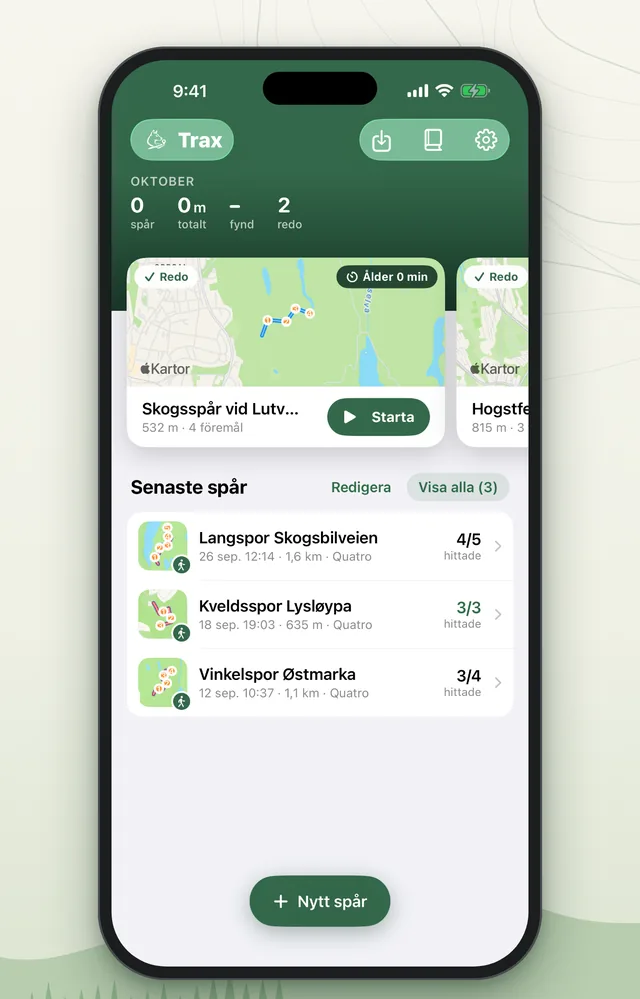
Allt på ett ställeMånadens siffror, spår som är redo att starta och dina senaste spår. 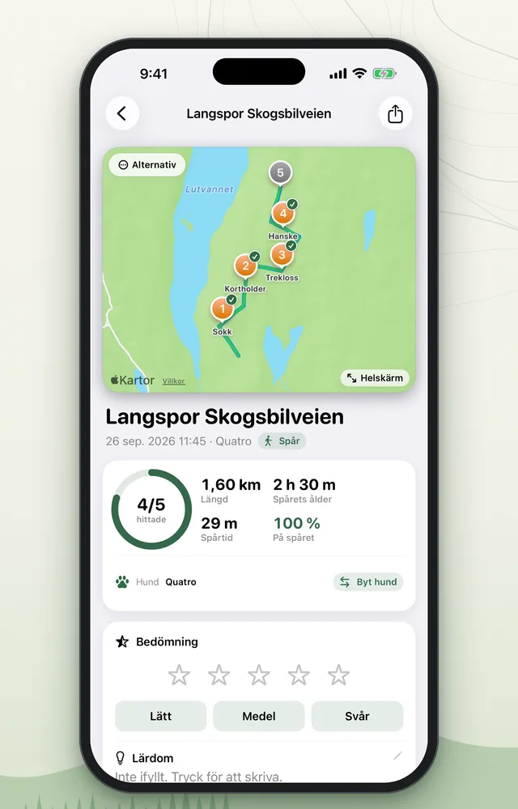
Hela spåret på ett kortKarta, hittade föremål, längd, spårets ålder och hur mycket av spåret hunden följde. 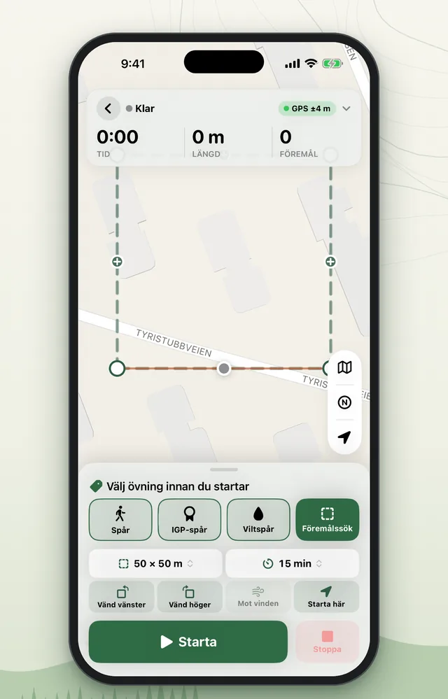
Välj övningSpår, IGP-spår, viltspår eller föremålssök. Rita rutan på kartan och sätt en tidsgräns. 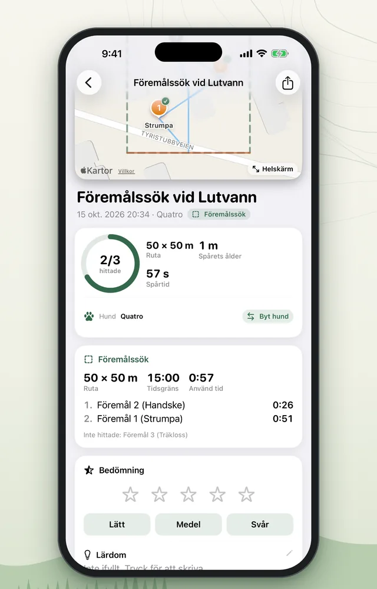
Föremålssök och ytsökSe vilka föremål hunden hittade och hur lång tid varje fynd tog. 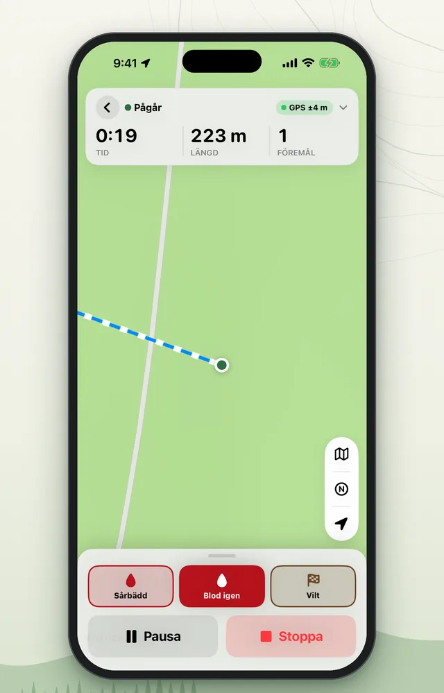
ViltspårMarkera sårbädd, blod igen och vilt med ett tryck medan ni arbetar er igenom spåret. 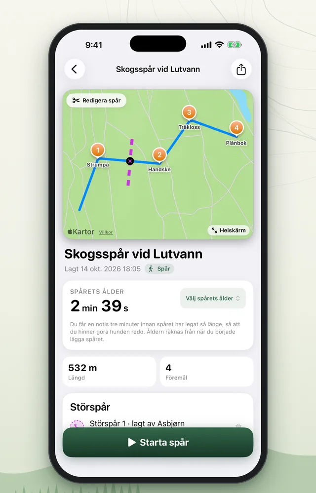
StörspårLägg ett färskare spår på tvären och se spårets ålder räknas ner innan ni startar. 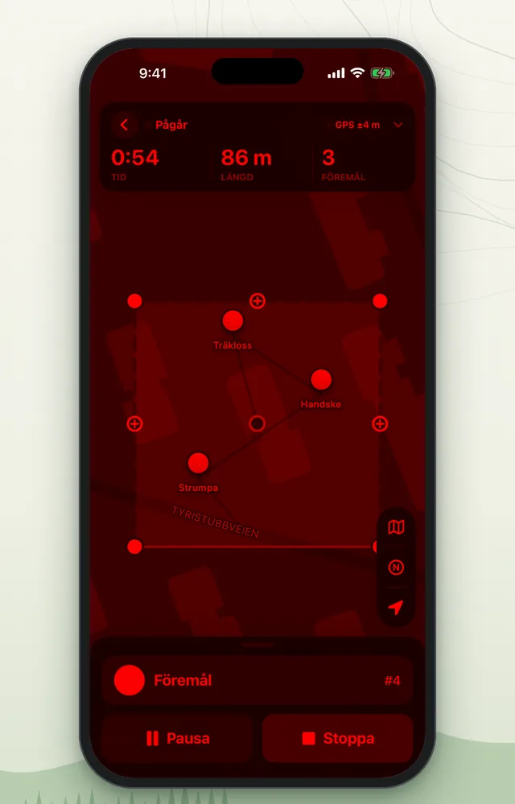
NattlägeRött ljus på skärmen när du tränar i mörker.
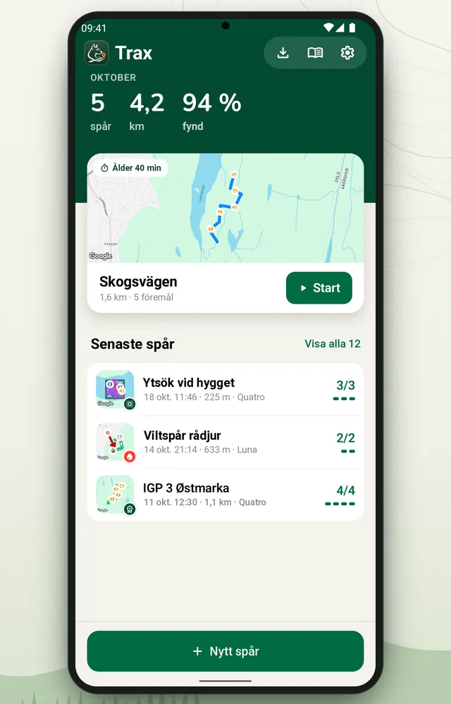
Allt på ett ställeMånadens siffror, spår som är redo att starta och dina senaste spår. 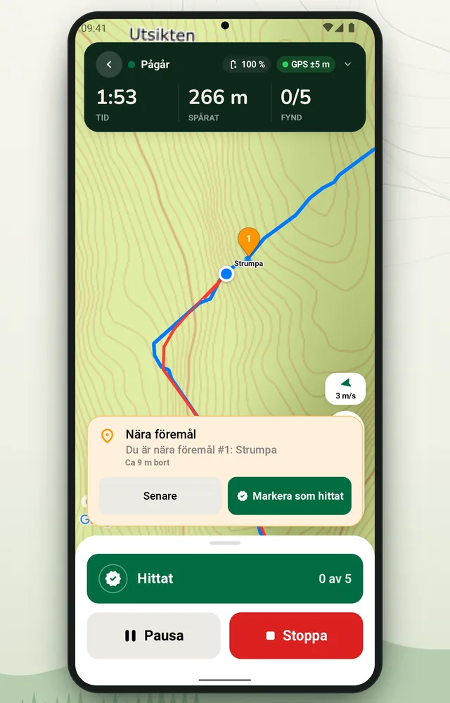
Markera fynd under spåretTrax säger till när du närmar dig ett föremål. Ett tryck, så är fyndet registrerat. 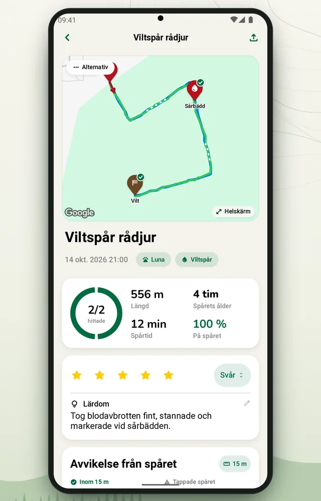
Hela spåret på ett kortKarta, hittade föremål, längd, spårets ålder och hur mycket av spåret hunden följde. 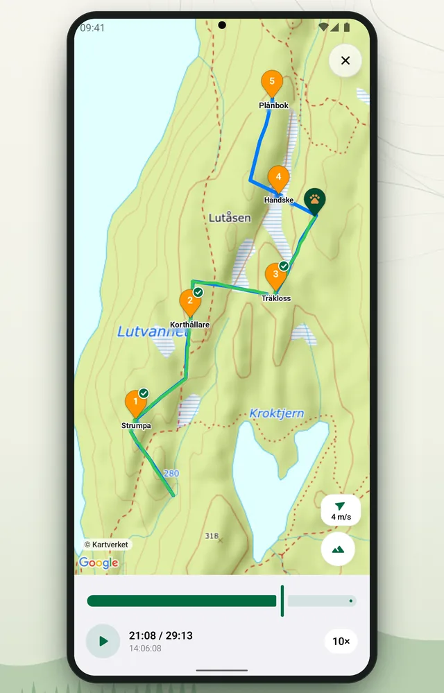
Spela upp spåretSe det lagda spåret och hundens väg sida vid sida, i upp till 10x fart. 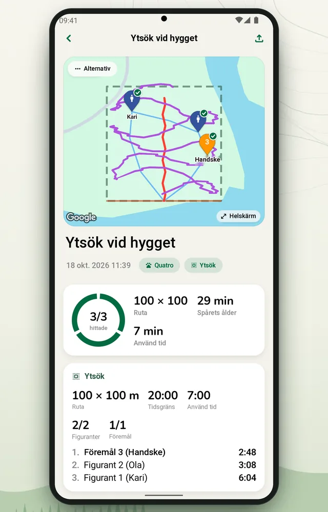
Föremålssök och ytsökSe vilka föremål och figuranter hunden hittade och tiden till varje fynd. 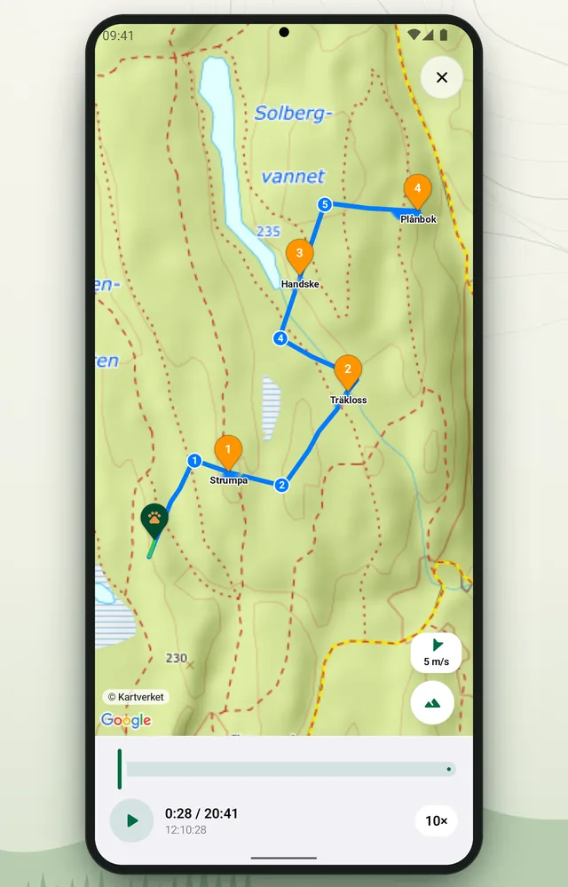
IGP-spår med vinklarNumrerade vinklar och föremål, och hundens väg ovanpå det lagda spåret. 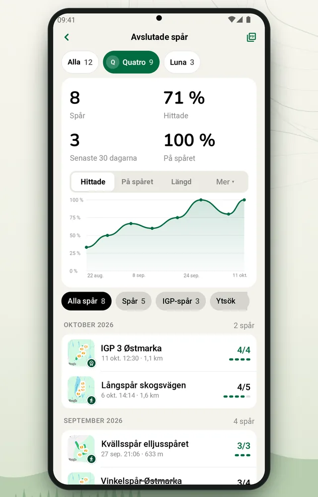
Följ utvecklingenFynd, hur väl hunden höll spåret och längd över tid, för varje hund. 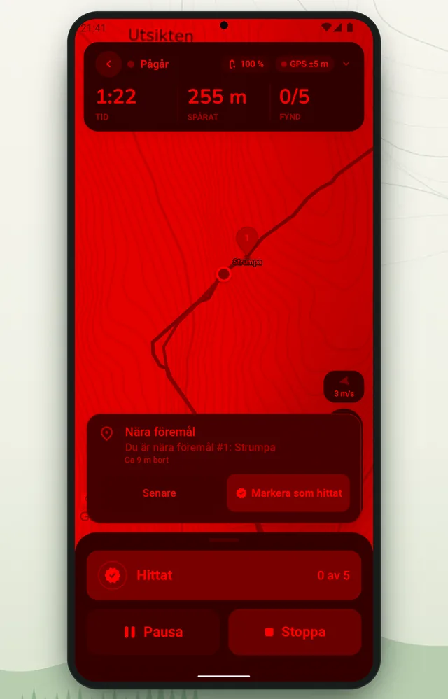
NattlägeRött ljus på skärmen när du tränar i mörker.